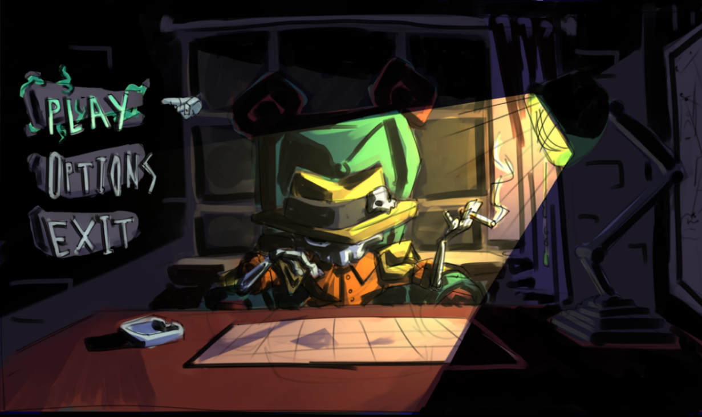
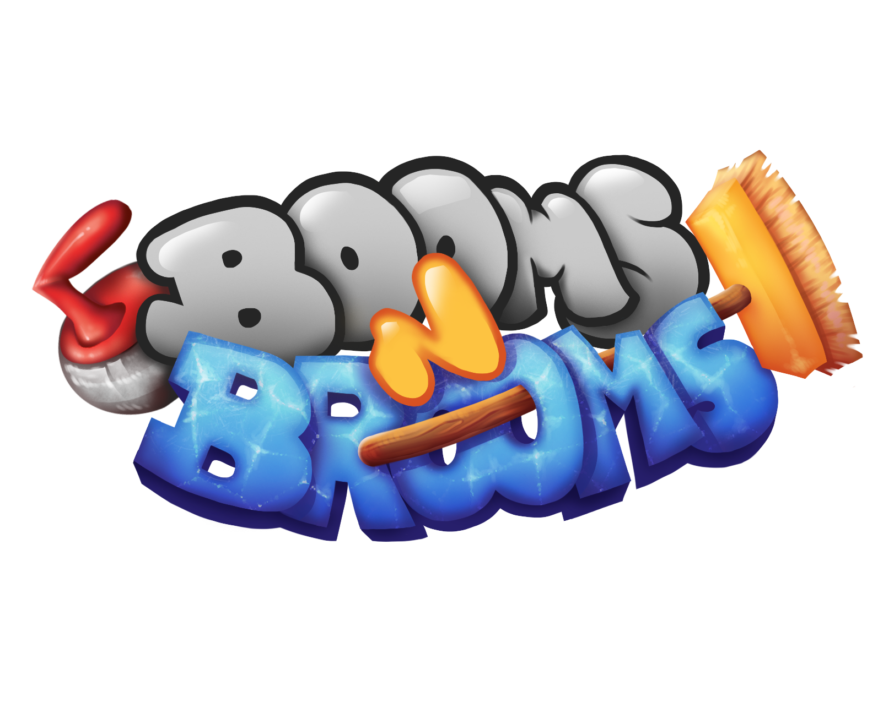

NecroGangsters
2v2 couch party game where you and your teammate compete to summon the biggest and nastiest brute in town. After all, making a name for yourselves in these streets won’t come easy.
Game pageInterested in Gameplay programming • AI programming • Graphics programming
I have been invested in games and how they make things come to life for me for a long time. I started with the old flash games on your browser but I quickly found Origin and Steam and found SimCity and Poly Bridge. Those games got me invested in how they showed so many npc's on-screen without crashing your PC and others with its physics. Now I can program myself and let others be amazed at what games can do.
I am interested in 3 areas of game development, gameplay programming, AI programming, and graphics programming. Gameplay programming is the widest area of the 3 because it can be anything from a parkour, to a racing, to a roguelike and that is what I like about it; every project is unique and has its own challenges for the gameplay programmers. AI programming is also very interesting, and it can get really complex but that is what I like about it. You can use so many different algorithms for your pathfinding and decision-making but finding the right one is a nice challenge. Graphics programming is quite mathematical and I through my teenage years I always loved math and physics so being able to combining it now with programming is amazing.

2v2 couch party game where you and your teammate compete to summon the biggest and nastiest brute in town. After all, making a name for yourselves in these streets won’t come easy.
Game page
A party curling game.... WITH MINES! The players embody a curling rock with one purpose, score as much as possible over the course of 3 rounds! Playable from 2 - 4 players, screw over your enemy rocks by setting them off course using mines to blast yourself forward!
Game pageThis is not a big game or anything but this was my first ever VR project / graduation project that I made before college. I wanted to put it here because then I could only make c# console and WPF applications and this I thought myself, how to work in a game engine (here I used Unity) and do VR development.
This game fascinates me because of its AI. It has its own complex ecosystem that always amazes me.
In general I already love open world games it is my favourite and it always made me wonder how games can show a big world and still run fine
The gameplay mechanics in this game are crazy good on how to all interact with each other.